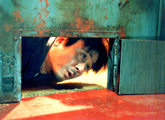

5올드보이
Old Boy
!

제작연도 2003
감독 박찬욱
장르 드라마
출연 최민식, 유지태, 강혜정,
김병옥, 오달수
김병옥, 오달수
상영시간 1시간 59분
키워드 반전, 복수
!
술에 취해 집에 가는 길, 누군가에게 납치당해 사설 감금방에 갇힌 오대수(최민식)는 감금 1년 무렵, TV를 통해 아내가 살해당하고 자신이 용의자로 지목되었음을 알게 된다. 복수와 탈출의 기회를 노리며 그곳에서 지내기를 15년. 어느 날, 잠든 대수에게 최면술사(이승신)가 찾아와 최면을 걸고, 대수는 자신이 납치당했던 곳에서 눈을 뜬다. 그는 우연히 한 일식집에서 요리사 미도(강혜정)를 만나고, 그녀를 사랑하게 된다. 마침내 대수는 자신을 납치한 우진(유지태)을 만나게 되지만, 우진은 5일 안에 감금의 원인을 스스로 알아내라며 미도와 자신의 목숨을 건 게임을 제안한다. 그 과정에서 대수는 과거의 어떤 기억과 맞닥뜨리고 충격적인 사실을 알게 된다. 눈 덮인 산 중턱, 대수는 최면술사에게 모든 것을 잊게 해달라고 하고, 얼마 후 최면에서 깨어난다. 눈밭에 덩그러니 누워 있는 그를 찾은 미도는 그의 언 몸을 녹여주며 그를 끌어안는다.